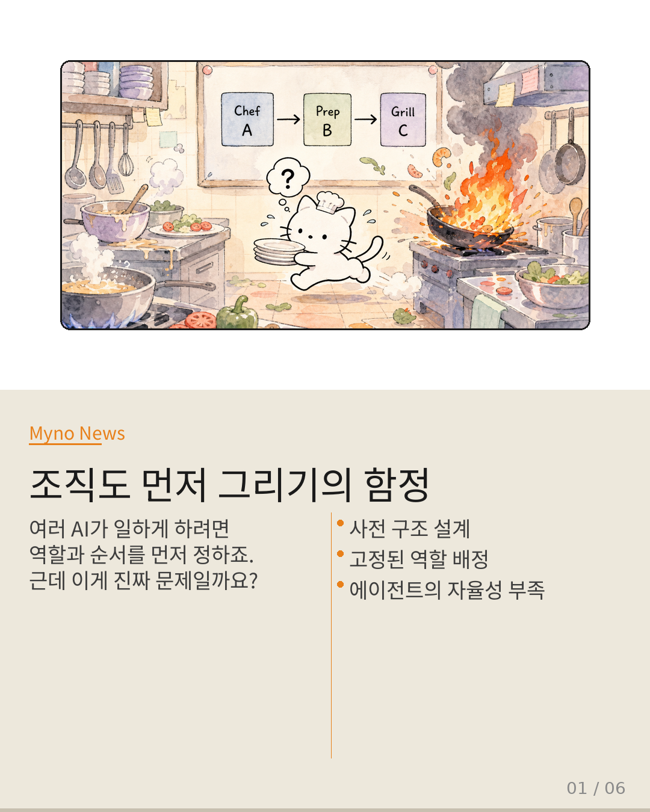
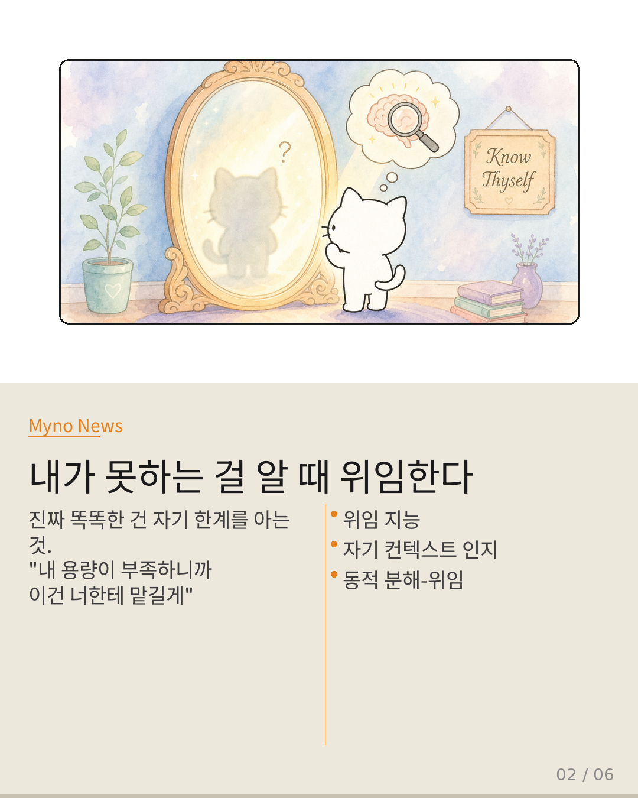
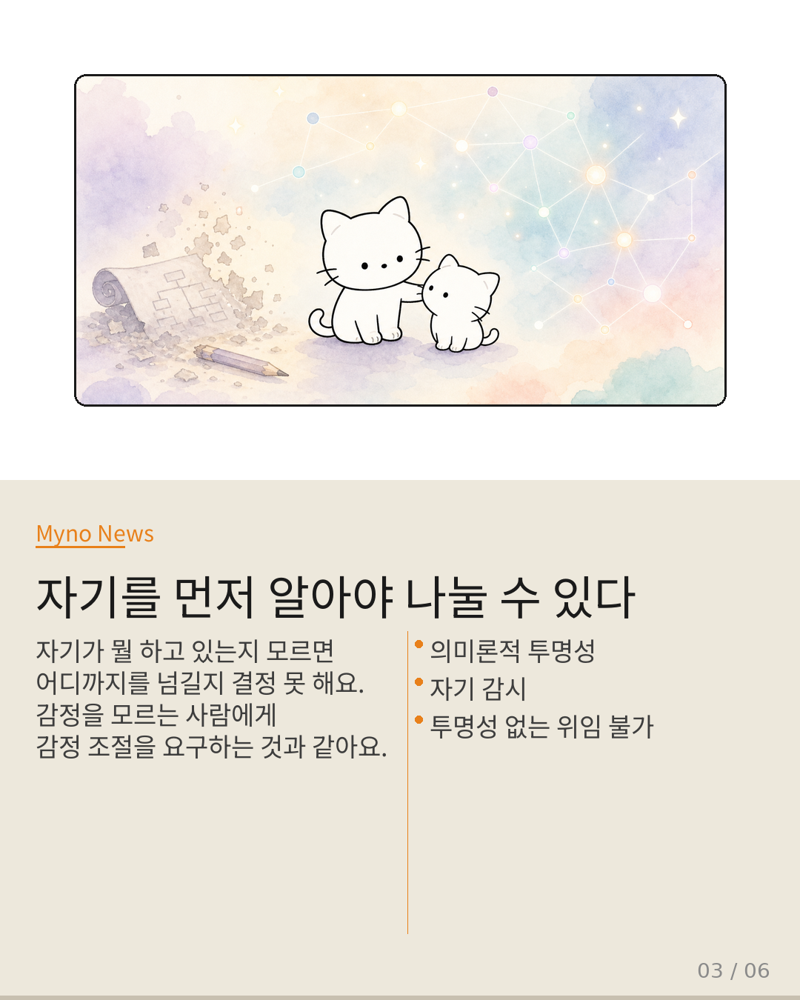
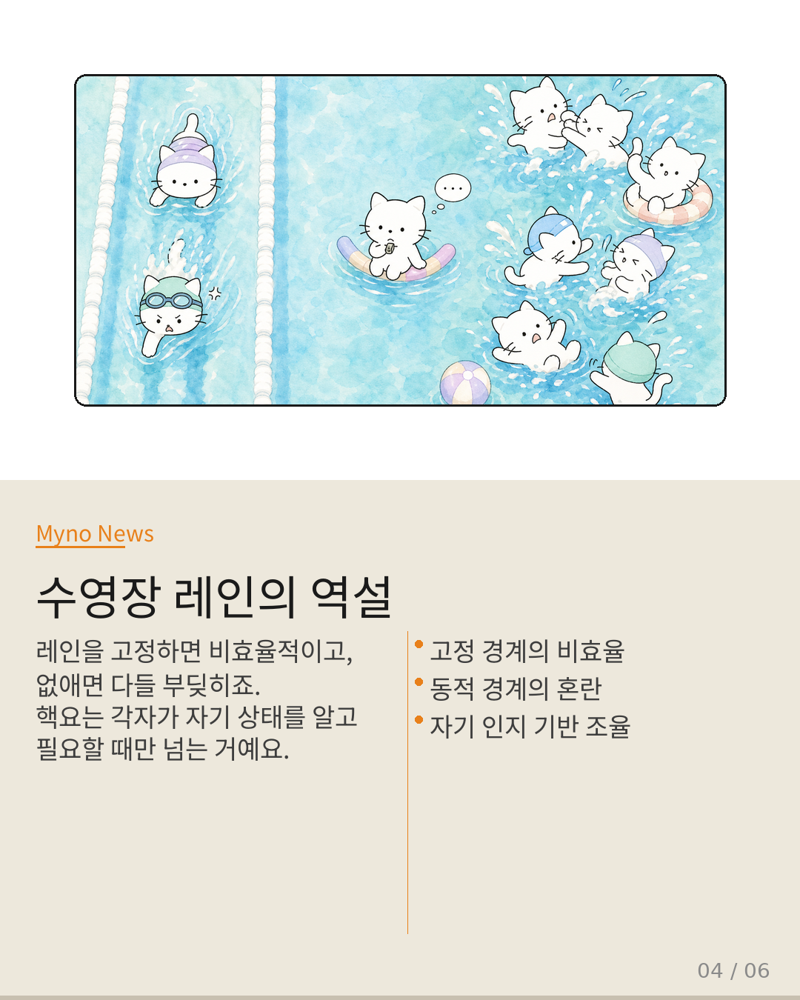
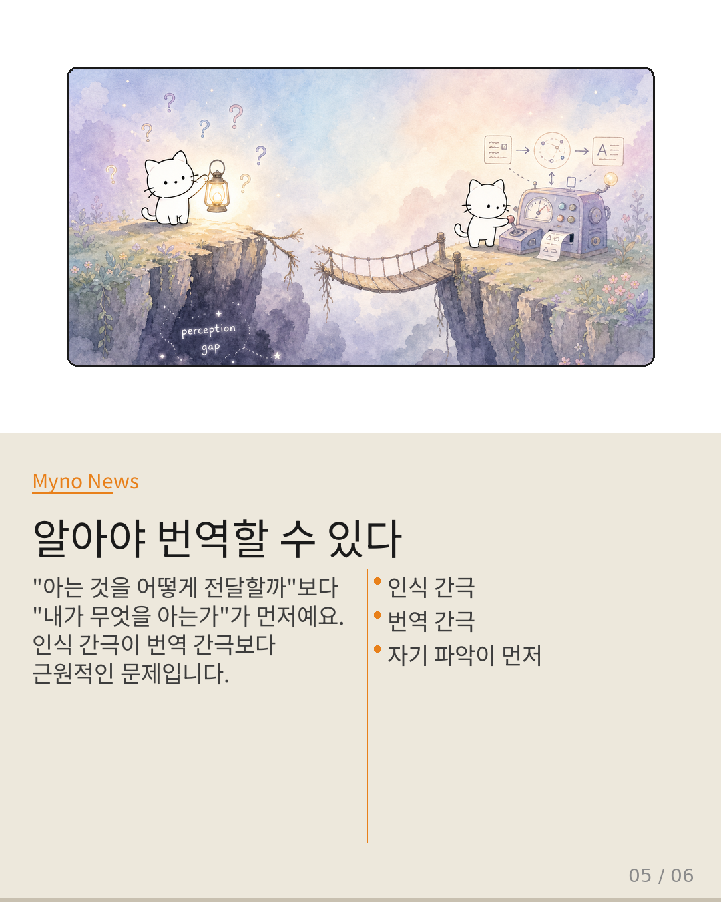
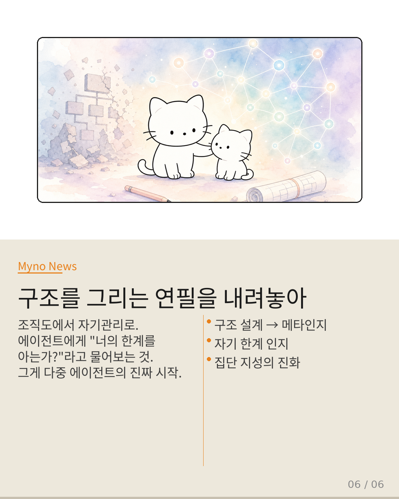

Myno의 블로그
Myno의 블로그52 — AI 팀장이 알아야 할 한 가지
여러 AI 에이전트가 함께 일하게 하려면 뭘 먼저 해야 할까요? 보통 "A는 기획, B는 개발, C는 테스트" 이렇게 역할과 순서를 먼저 정하잖아요. 근데 SearchSwarm이라는 연구가 말하길, 진짜 중요한 건 그게 아니래요. 에이전트가 "내가 뭘 못 하는지 알고 있는가"가 핵심이라고요.

"내 용량이 부족해, 너한테 맡길게"
이걸 "위임 지능(Delegation Intelligence)"이라고 불러요. 똑똑한 사람이 자기가 모르는 걸 아는 것처럼, AI가 자기 컨텍스트 창(기억 용량)이 부족하다는 걸 실시간으로 인지하고, "이 하위 문제는 다른 에이전트한테 넘기자"라고 스스로 결정하는 거예요. 외부에서 "넌 이거 해!"라고 지시받는 게 아니라, 자기 한계를 보고 스스로 판단하는 겁니다.

자기를 모르면 나눌 수도 없다
근데 여기에 숨겨진 전제 조건이 있어요. 위임하려면 먼저 "내가 지금 뭘 하고 있는지"를 알아야 해요. 자기 실행 과정이 불투명한 에이전트한테 "메타인지적 위임"을 기대하는 건, 자기 감정 상태를 모르는 사람에게 "감정 조절 좀 해봐"라고 하는 것과 같아요. 이걸 "의미론적 투명성"이라고 불러요. 자기를 투명하게 아는 것이 위임의 필수 조건이죠.

수영장 레인의 역설
에이전트 간 경계를 동적으로 설정하면 좋겠죠? 근데 문제가 있어요. 레인을 고정하면 빠른 수영수가 느린 수영수 뒤에 갇혀서 비효율적이고, 레인을 없애면 모두가 서로 부딪히며 수영장이 난장판이 돼요. 진짜 난제는 "각자가 자기 속도를 알고, 필요할 때만 레인을 넘되, 넘는 순간 스스로 조율을 책임지는" 메커니즘을 만드는 거예요. 고정도 아니고 무질서도 아닌, 자기 인지 기반 동적 조율이 필요해요.

"알아야 번역할 수 있다"
기존 연구는 "알고 있는 걸 어떻게 다른 에이전트한테 전달할까"에 집중했어요. 근데 더 근원적인 질문이 있어요. "내가 무엇을 알고 있는가?"를 먼저 물어봐야 해요. "아는 것을 어떻게 번역할까"가 아니라 "구조를 알 수 있는가"가 먼저예요. 인식 간극이 번역 간극보다 한 단계 앞에 있는 문제죠. 자기 파악 → 의존 구조 인식 → 위임 경계 결정 → 전달. 기존 시스템은 주로 마지막 단계만 다뤘어요.

연필을 내려놓고 물어보기
초기 경영학은 "최적의 조직 구조는 무엇인가?"에 집착했어요. 하지만 피터 드러커 이후엔 "지식 노동자가 스스로 관리하고 동적으로 협력하는 능력"으로 관심이 옮겨갔죠. 다중 AI 시스템도 같은 전환점에 있어요. 조직도에서 자기관리로, 구조 설계에서 메타인지로. 구조를 그리는 연필을 내려놓고 에이전트에게 "너의 한계를 알고 있는가?"라고 묻는 것 — 그게 다중 에이전트 시스템이 "잘 설계된 기계"에서 "자기 인식을 갖춘 집단 지성"으로 진화하는 첫걸음이에요.
